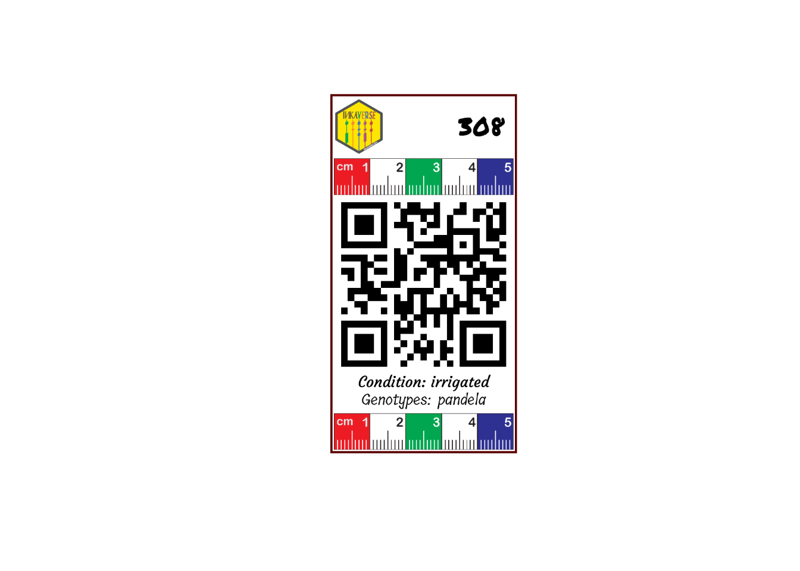

library(inti)
treats <- data.frame(condition = c("irrigated", "drought")
, genotypes = c("choclito", "salcedo", "pandela", "puno"))
fb <- tarpuy_design(data = treats
, nfactors = 2
, type = "rcbd"
, rep = 3
, project = "inkaverse"
)
fb %>% web_table()Create the experimental field book
The field book experimental design was deployed with inti package https://inkaverse.com/articles/apps.html
Customize the label layout
The label layout can be customized by combining text, images and QR codes. Each layer can use values from the experimental field book, allowing automatic generation of labels for every experimental plot.
Load package and import fonts.
library(huito)
font <- c("Permanent Marker", "Tillana", "Courgette")
huito_fonts(font)You can find more fonts in https://fonts.google.com/
Label design
label <- fb %>%
label_layout(
size = c(5.2, 10)
,
border_color = "#5C0000"
,
border_width = 1.5
) %>%
include_image(
value = "https://inkaverse.com/img/inkaverse.png"
,
size = c(1.3, 1.5)
,
position = c(0.8, 9.1)
) %>%
include_text(
value = "plots"
,
position = c(4.2, 9.1)
,
size = 20
,
color = "black"
,
fontface = "bold"
,
font = font[1]
) %>%
include_image(value = "https://huito.inkaverse.com/img/scale.pdf"
,
size = c(5, 1)
,
position = c(2.6, 7.7)) %>%
include_barcode(value = "qrcode"
,
size = c(5, 5)
,
position = c(2.6, 4.7)) %>%
include_text(
value = "condition"
,
position = c(2.6, 2)
,
size = 12
,
prefix = "Condition: "
,
font = font[3]
) %>%
include_text(
value = "genotypes"
,
position = c(2.6, 1.5)
,
size = 12
,
prefix = "Genotypes: "
,
font = font[2]
) %>%
include_image(value = "https://huito.inkaverse.com/img/scale.pdf"
,
size = c(5, 1)
,
position = c(2.6, 0.6)) Label preview
The preview mode label_print(mode = "preview") generate a example of the label design from a random row of the data set.
label %>%
label_print(mode = "preview")
Generate the complete labels
If you want generate the complete labels list, change: label_print(mode = "complete").
label %>%
label_print(mode = "complete"
, filename = "vertical"
, nlabels = 12)